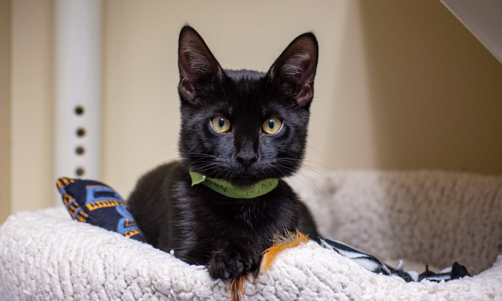

Meet Jiji

Breed: Domestic Short Hair
Age: 3 months old
Sex: Female
Location: Los Angeles, CA
Adoption Fee: $175
Description: Jiji is a loyal companion with a bit of sas. She will offer you lots of support when you're not feeling your best, but she will also let you know when you're being a little too extra. She would make a great addition to any family who needs a bit of chaos.